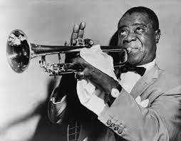

Рок-музыка (англ. Rock music) — обобщающее название ряда направлений популярной музыки. Слово rock указывает на характерные для этих направлений ритмические ощущения...
Возник Хип-Хоп в 1973 году благодаря ямайскому Диджей Кул Херк... направлений в музыке. В начале 1980-х сначала наркоторговцы, а затем и лейблы заинтересовались новыми талантами из бедных районов, увидев в этом прибыль.
 Джаз (англ. jazz) — форма музыкального искусства, возникшая в конце XIX — начале XX века в США... Характерными чертами музыкального языка джаза изначально стали импровизация, полиритмия, основанная на синкопированных ритма, и уникальный комплекс приёмов исполнения ритмической фактуры — свинг. Дальнейшее развитие джаза происходило за счёт освоения джазовыми музыкантами и композиторами новых ритмических и гармонических моделей.
| Жанры музыки | Года популярности | ||
|---|---|---|---|
| 1920-е - 1940-е | 1980-е - 1990-е | 1990-е - 2000-е | |
| РОК | + | ||
| ХИП-ХОП | + | ||
| ДЖАЗ | + | ||